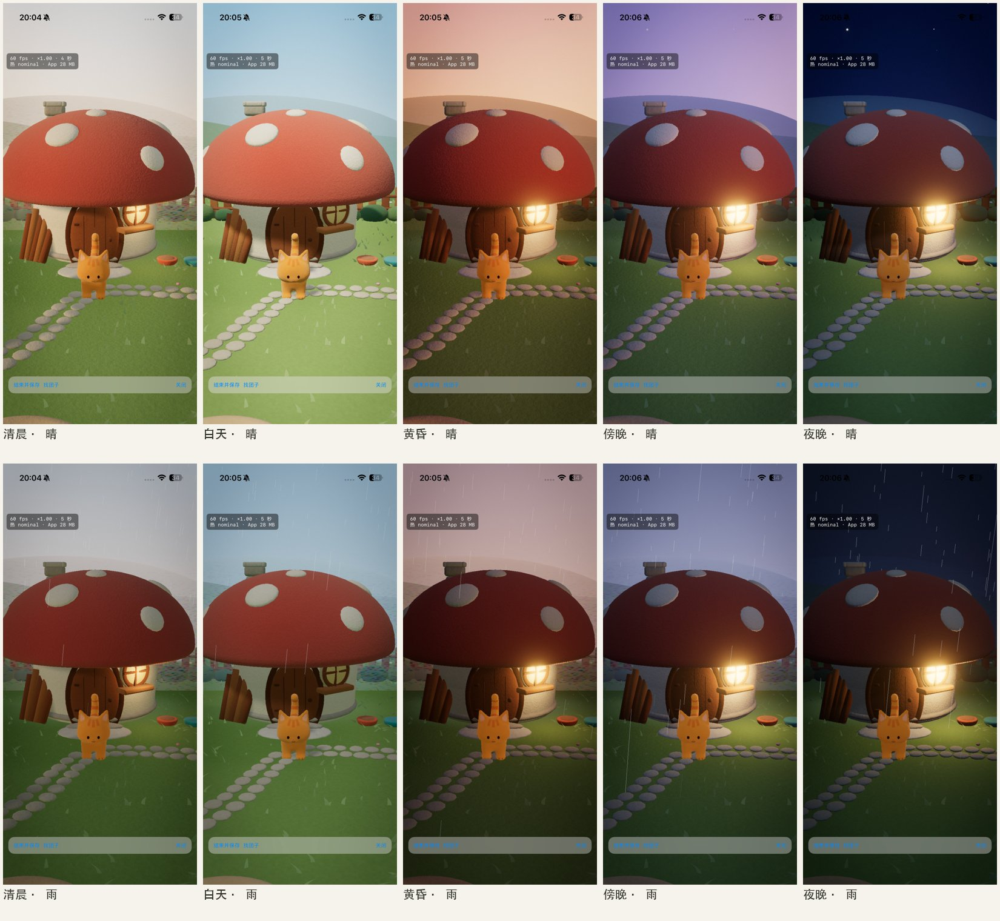

3D 小院 · 已锁定画面
先看总览的院子大小，再看屋、树、池塘是否协调，最后看夜雨的团子与窗光。画面和手感已由用户确认，一键全景按钮已移除；20分钟持续性能、手势与恢复、内存观测窗口和能耗记录均已完成。
当前真机图列在前；09-27模拟器参考图收在下方。10-02最终调试基线为2525…aa27，已移除全景按钮并修复异常恢复的遮罩闪空；模型与画质配置未变。图中“聊会儿”等是预览控件。
10-02 当前版真机图
iPhone 16 Pro Max / iOS 26.6.2 · 七处白天与三处夜雨，均绑定当前源码/模型；短拍图不作为性能结果。
查看五时段晴雨光色快检
这组真机图片用于检查时段与天气，页面带量测控件；短时图像不作为持续性能结果。

展开09-27模拟器参考图
09-27 模拟器评审图
验收报告 · 最新真机证据分日期记录，不混用设备和版本。